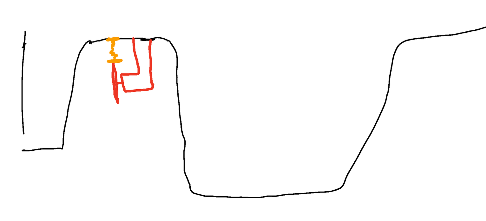
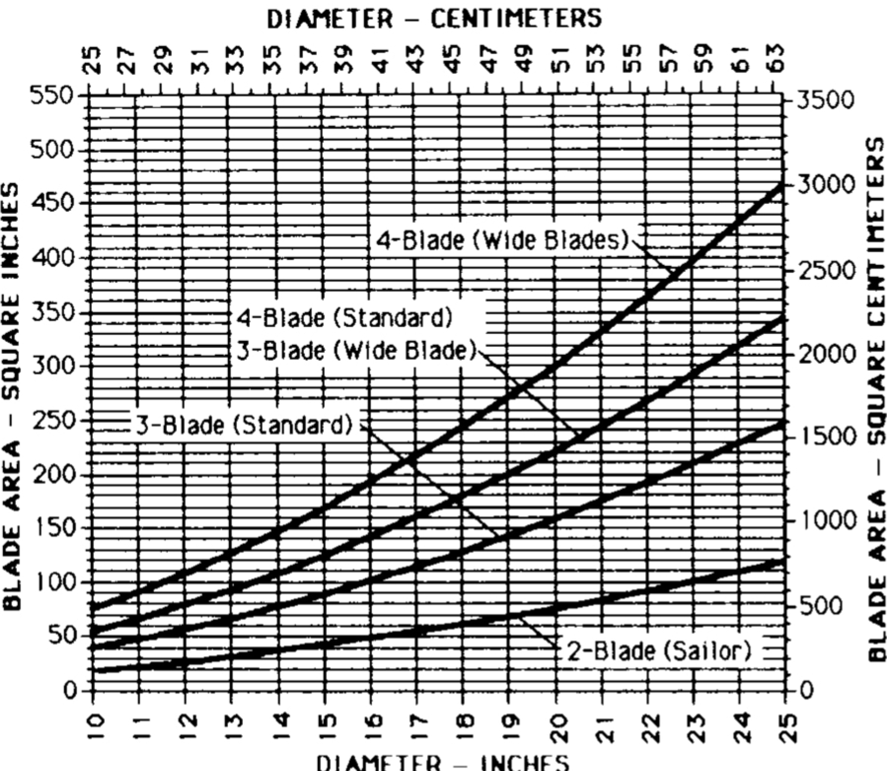
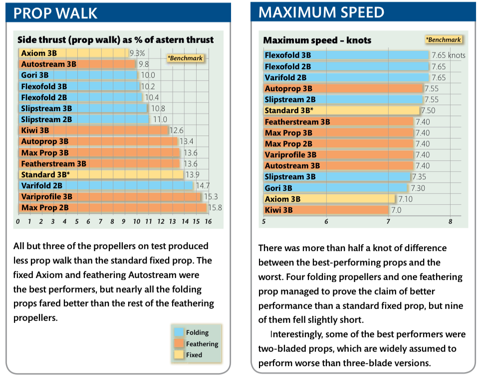
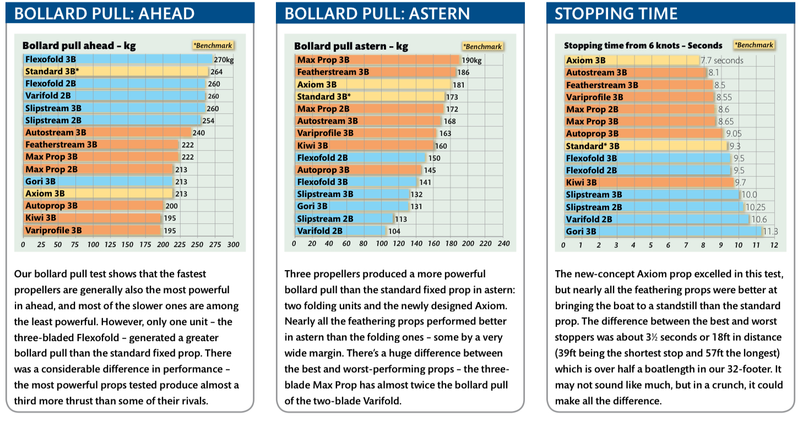
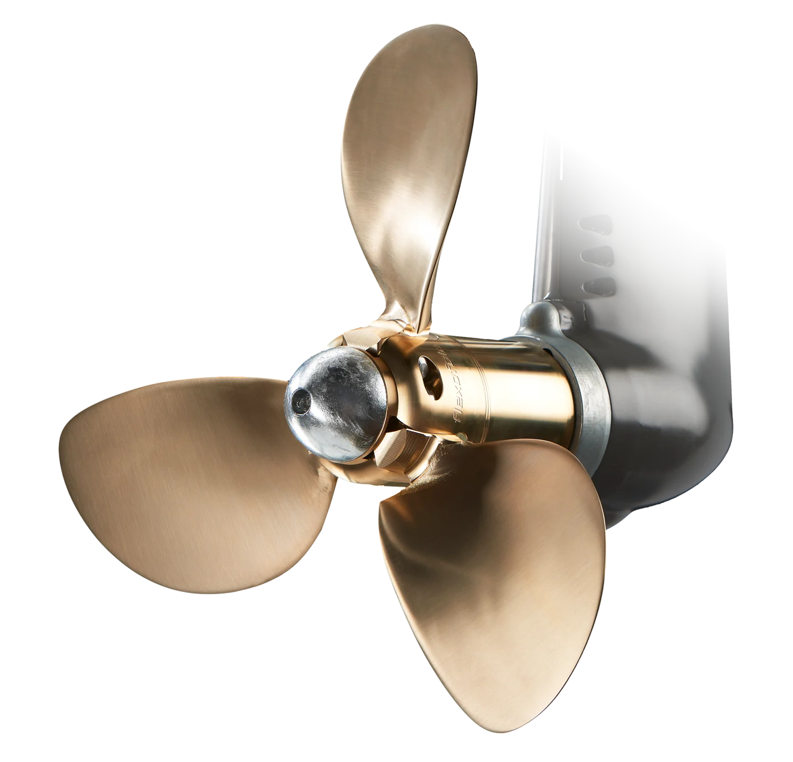

Lite tankar om ankring
Nämn ordet ankring eller ankare till vilken grupp av båtfolk som helst oavsett om det är motor eller segelbåtar som ligger varmt om hjärtat så tar det inte l...

Senast uppdaterad:
Sedan vi köpte Freya har vi haft ett litet problem mellan kölen och rodret – nämligen propellern. Själva propellern är det i och för sig inget fel på, eftersom den i princip är ny då den levererades tillsammans med motorn. Däremot är dimensioneringen något galen, då den är lite för liten för både motorn och båten.
Det hela började med båtens tidigare ägare, som vänligt nog beslutade sig för att byta motor strax innan båten skulle säljas. Valet stod mellan en vanlig sugmotor utan turbo på 55 hk (en Volvo Penta D2-55) och en turbomotor på 75 hk. Eftersom prisskillnaden inklusive installation var obetydlig, valdes den större motorn på 75 hk – med tanken att fler hästkrafter är bättre, ungefär som med fordon på land. Hur god tanken än må ha varit, föll den på eget grepp, då ingen räknade på vilken motor och propeller som faktiskt var bäst lämpad för Freya – en segelbåt på 12 meter och 10 ton, med en vattenlinje på 9,5 meter, främst avsedd för långfärdssegling med allt vad det innebär.
Det här inlägget handlar visserligen inte om motorn i sig, men jag passar ändå på att flika in några högst personliga tankar och åsikter – det är ju trots allt min text, och lite bakgrund skadar inte att ha med sig längre ner i läsningen. Som jag ser det behöver en långfärdsbåt en motor som kan användas till att ladda batterier, värma vatten, ta sig in och ut ur marinor, och fungera som transport när vinden uteblir. Självklart ska den dra så lite diesel som möjligt per timme och helst kunna gå på låga varvtal utan att ta skada. Det står i tydlig kontrast till en turbomotor, som mår bäst av att gå på höga varv och under visst motstånd.
På tal om motstånd – nu börjar vi närma oss kärnan i problemet. Det motstånd en båtmotor utsätts för beror på hur stor propeller den driver. En större propeller skapar mer motstånd än en mindre, och propellerns storlek avgörs av:
Vattenlinjens längd
Motorns effekt (både vridmoment och hästkrafter)
Motorns maxvarv
Eventuell utväxling mellan motor och propeller
Dessa fyra faktorer kan, med lite matematik, användas för att beräkna en teoretisk maxfart och marschfart.
När motorn köptes kunde Volvo D2-75 levereras tillsammans med en 17x13-tums propeller (de har nu gått upp till 18x13 tum), vilket var det största fasta alternativet med tre blad. För att hoppa lite i förväg: Freya kräver, med den här motorn, en 20x13-tums propeller – alltså en som är cirka 7,5 cm större än originalet. Och då har jag inte ens räknat på skillnaden i bladyta mellan den medföljande propellern och den som faktiskt vore lämplig. Nu skulle man ju både kunna tro och tycka att varvet som monterade motorn hade valt en 17x13-tums propeller för att göra så gott de kunde men så blev det inte, om de istället gick ut på lagret och letade upp en propeller eller om de faktiskt beställde en från Volvo (jag anar att det är det sistnämnda då propellern såg ny ut när vi köpte Freya) förtäljer inte historien, men något geni på tyckte att det var en bra idé att montera en 16x11-tums propeller istället.
Hur som helst – om någon (t.ex. företaget som sålde motorn) hade bemödat sig att lägga åtminstone fem minuter på att räkna på båt och motor innan försäljningen, hade de snabbt upptäckt att det inte bara skulle bli dyrare för kunden att montera en Volvo Penta D2-75 med standardpropellern från Volvo – det skulle dessutom vara dåligt för både propellern och motorn, att de sedan monterade en ytterligare mindre propeller med helt felaktig stigning är bara korkat och väl över gränsen till idiotiskt på alla sätt och vis. Det finns ingen som helst motivering som håller.
När en dieselmotor belastas för lätt på grund av det låga motståndet från en liten propeller, leder det till kalla avgaser och dåligt laddtryck (om det är en turbo). Båda dessa problem skapar bekymmer för ägaren både på kort och lång sikt, med risk för koksbildning i motorn och en försämrad turbo som följd. Den lilla propellern “slirar” mer och förlorar kraft, samtidigt som den kaviteterar i onödan, vilket förkortar propellerns livslängd.
Det kan tänkas att varven som installerar dessa komponenter gnuggar händerna bakom ryggen på kunden, eftersom de ofta får en beställning på turborenovering lite senare. Det innebär att de kan skicka en rejäl faktura för arbete och kanske en ny turbo. En briljant affärsplan – om än i samma kategori som telemarketingbolag eller indiska bitcoin-scammers.
Om vi gör en nulägesanalys med den propeller som sitter på i dagsläget, är vår marchfart mellan 4 och 4,5 knop vid 2000–2100 varv per minut. Vår turbo borde leverera 0,6 bar, men just nu ger den bara 0,3 bar. Det är uselt för en båt som vår med den motorn som sitter i.
Att vi varje vinter måste riva ner och serva/rengöra vår turbo eftersom den slår igen, även när vi regelbundet bränner ur den genom att låta motorn gå nästan på maxvarv, skvallrar om att något inte står rätt till.
Tillbaka till ämnet: vi har som sagt räknat lite på vilken propeller som skulle vara lämplig och kommit fram till att en trebladig 20x13 tums propeller skulle vara perfekt för Freya och hennes motor. Så här kom vi fram till det.

Först räknar vi om vattenlinjen från meter till fot.
\[\text{Vattenlinje} = 9{,}4 \text{ m} \times 3{,}25 = 30{,}83 \text{ fot}\]Med hjälp av vattenlinjen i fot kan vi sedan beräkna båtens teoretiska skrovfart genom att ta roten ur vattenlinjen och multiplicera med 1,34
\[\text{Skrovfart} = \sqrt{30{,}83} \times 1{,}34 = 7{,}44 \text{ knop}\]Föredrar du att räkna med meter istället för fot använder du istället:
\[\text{Skrovfart} = \sqrt{9{,}4} \times 2{,}427 = 7{,}44 \text{ knop}\]Skrovfarten kallas även deplacementshastighet. Det är den fart där en båts bogvågsvåglängd är lika lång som båtens längd i vattenlinjen. Överskrider båten den hastigheten (utan att plana) blir båtens effektivitet mycket lägre eftersom den börjar färdas uppför vågen som den själv skapar. Vilket betyder att den färdas i en uppförsbacke utan slut.
Nu när vi har full koll på vår skrovfart kan vi beräkna hur många fot vi färdas på en minut genom att multiplicera farten i knop med 101,3.
\[\text{Distans/min} = 7{,}44 \times 101{,}3 = 753{,}67 \text{ fot/min}\]För dig som funderar på varför vi krånglar till det med fot istället för meter beror det på att propellrar hänger ihop med båtar och där räknas saker och ting i knop, fot, inches och distansminuter med mera. Det har inget att göra med att hela den maritima världen tycker att USA använder rätt måttsystem.
Nu vet vi hur snabb båten kan vara, så nästa steg är att räkna ut hur snabbt vår propeller kan snurrar när den går som snabbast. Det gör vi genom att titta på motorns maxvarv i kombination med växellådan mellan motorn och propellern. I vårt fall, med en Volvo Penta D2-75, är maxvarvet 2700–3000 rpm och mellan motor och propeller har vi ett 150S segeldrev med utväxlingen 2,19:1. Det betyder att när motorn snurrar 2,19 varv så snurrar vår propeller 1 varv.
$$
\frac {3000}{2{,}19} = 1369 \text{varv/minut}
$$
Vid 3000 rpm ger det 1369 varv per minut. Eftersom vi har en växellåda, flera kugghjul och annat i motorn som orsakar viss förlust, väljer vi att räkna på 90 % effekt istället för 100 %. För att komma lite närmare sanningen drar vi därför av 10 %:
\[1369 \times 0{,}9 = 1232 \text{varv/min}\]Nu när vi räknat ut hur många varv propellern teoretiskt kan snurra per minut går vi raskt vidare till att räkna ut vilken lutning (pitch) propellerbladen ska ha. Om vi ser propellern som en korkskruv som skruvas in i en kork (vad annars används en korkskruv till?) så slirar den inte, utan ett varv skruvar den in sig en viss sträcka. För att räkna ut vilken pitch propellerns blad ska ha för att båten ska färdas 753,67 fot/minut vid 1232 varv/minut delar vi helt enkelt sträckan med varvtalet och multiplicerar med 12 för att få hur många tum propellerns pitch behöver.
\[\text{Sträcka/Varv} = \frac{753{,}67}{1232} \times 12 = 7{,}33 \text{tum}\]Du som läste noga tidigare kommer självklart ihåg att propellern vi behöver har en pitch på 13 tum och inte 7,33. Det beror på att vattnet tyvärr (eller tack och lov för de som dyker från höga höjder) inte har samma densitet som kork, vilket gör att propellern slirar i vattnet – precis som en bil lätt slirar på grus när man gasar för mycket.
Detta gör att vi behöver räkna på något som inom propellerspråk kallas för slippage, eller kort och gott slip. Det kan såklart göras mycket avancerat, men här håller vi oss till uppskattade värden. För propellrar med tre blad kan man räkna med 40–45 % slip, vilket ger en propellereffekt på 55–60 %. Vi knuffar undan vår OCD och väljer ett medelvärde på 57,5 % för att kunna räkna vidare och få fram vår pitch med slip.
\[\frac{7{,}33}{0{,}575} = 12{,}75 \text{tum}\]Då marknaden är långt från mättad av propellrar med en pitch på 12,75 tum tar vi oss friheten att avrunda upp till 13 tum.
Nästa steg är att lista ut hur stor vår propeller ska vara. Storleken har betydelse, oavsett vad de säger på varvet.
För att beräkna vilken diameter en propeller kan ha behöver vi veta hur båten ser ut under ytan. Det vi söker är avståndet mellan propelleraxeln och skrovet för att kunna räkna ut propellerns maximala storlek. Det är inte bara viktigt att den får plats utan också att den inte skavar hål i skrovet. Vi måste komma ihåg att när en propeller snurrar skapas många virvlar när den knuffar vatten bakåt och båten framåt (Newtons tredje lag, som kort och gott säger att för varje kraft finns en lika stor men motriktad kraft).
För att kraften ska bli så “ren” som möjligt behöver vi ha ett litet avstånd mellan propellern och skrovet (markeringen i orange på bilden nedan). Enligt många tester är konsensus att det ska vara minst 10–15 % fritt. I vårt fall har vi nästan 30 % med en 20-tums propeller.

I vårt fall är avståndet mellan axel och skrov 32 cm, så vi har inga som helst problem med att montera vilken propeller som helst (med lite måtta, såklart).
Nu när vi vet att vi kan montera vilken propeller som helst kan vi räkna ut hur stor den faktiskt kan vara. För att göra det behöver vi veta hur många hästkrafter motorn kan leverera till propellern. På fikonspråk kallas detta Shaft Horse Power (SHP). Det är något man hittar i dokumentationen för motorn. I vårt fall är det 72 hk, men för att vara lite konservativa räknar vi med 65 hk istället.
Propellerns diamter beräknas enligt följande formel
\[D = \times \frac{632{,}7 \times SHP^{0{,}2}}{RPM^{0{,}6}}\]Vilket i vårt fall ger
\[D = \frac{632{,}7 \times 65^{0{,}2}}{1232^{0{,}6}} = 20{,}7 \text{tum}\]Sist men inte minst behöver vi räkna ut bladytan, det vill säga hur stor yta propellern har att jobba med för att driva vattnet – lite som att man skaffar bredare däck för att bilen ska få bättre grepp mot asfalten.
Beräkningen av bladytan är lite knepigare:
\[Bladyta = \frac {100 \times SHP}{Skrovfart} \times \sqrt{Skrovfart}\]Vilket för oss betyder
\[Bladyta = \frac{100 \times 65}{7{,}44} \times \sqrt{7{,}44} = 320 \text {tum}^2\]Det är förstås inte bara att knacka på hos en propellertillverkare och säga: “Hej, jag vill ha en 20-tumspropeller med en bladyta på 320 tum².” Eller jo, det kan man kanske – men det innebär med största sannolikhet att propellern måste specialtillverkas, vilket lär kosta skjortan. Ett alternativ är att istället fundera på om man ska välja en 2-, 3- eller 4-bladig propeller. En propeller med fler blad har en större yta och det finns diagram likt den nedan som kan användas för att hitta rätt. Värt att tänka på är att utvecklingen av propellrar inte står still så det som var rätt 30 år sedan behöver inte vara det idag vilket du märker om du studerar bilden nedan lite närmre efter du läst klart hela texten.

I stora drag handlar det om hur båten ska användas – därefter följer en gigantisk kompromiss. I princip kan man säga att en 3-bladig propeller har bra balans, små vibrationer och ger maximal toppfart (bra vid transport), medan en 4-bladig propeller ger betydligt bättre drag vid låga varvtal (bra vid manövrering i trånga marinor), men med något lägre toppfart.
I vårt fall, där vi inte har som hobby att manövrera i marinor, var valet enkelt – vi siktar in oss på en 3-bladig propeller. Att den 4-bladiga skulle kosta nästan 20 000 kronor mer har förstås inte alls med saken att göra. Inte det minsta.
Efter mycket räknande och ytterligare justeringar av siffrorna för varvtal och effekt kom vi fram till att en 3-bladig propeller med en diameter på 20 tum och en stigning på 13 tum skulle vara optimalt för hur vi använder båten och motorn. Därefter återstod bara att hitta en tillverkare som, enligt oss och i skrivandets stund, erbjuder det bästa alternativet som matchar våra kriterier.
Efter lite letande hittade vi ett djuplodande propellertest från Yachting Monthly, publicerat i maj 2009. Inför testet bad tidningen ett antal propellertillverkare att rekommendera den bästa propellern för deras testbåt. Därefter testades varje propeller på samma båt och under samma förhållanden. Resultatet visas här:
 
Som nämnt tidigare var vi ute efter maximal fart – syftet är att kunna förflytta oss längre sträckor per tidsenhet när det är dåligt med vind. Jag skriver just “längre sträckor per tidsenhet” eftersom en båtmotor mäter hur många timmar den varit igång, inte hur långt den “kört”. Det innebär att om en propeller bara ger 4 knop så måste motorn gå dubbelt så länge som med en propeller som ger 8 knop.
Med det i åtanke seglade Flexofold 3-bladig snabbt upp till toppen på vår lista. Att den dessutom genererade mest kraft bland deltagarna ser vi som en fördel – det är kanske inte så konstigt då fart och kraft ofta hänger ihop.
När det gäller kraft bakåt och stoppsträcka är Flexofold inte riktigt lika imponerande, särskilt i jämförelse med en standardpropeller. Men eftersom vår nuvarande “standardpropeller” är mellan 3 och 4 tum för liten, misstänker vi att Flexofold ändå kommer prestera bättre även där.
Propwalk beskriver hur mycket propellern drar i sidled, särskilt när båten backar. Det finns två sidor av myntet här: propwalk är irriterande när man backar mot en brygga eller i trånga utrymmen, eftersom båten drar i sidled istället för rakt bakåt. Meeeen – propwalk är toppen när man lägger till långsides vid bryggor. Man in i vinkel, styr in stäven för att sedan lägga i backen och låta propellern dra in aktern.
För Flexofold 3B innebär det att propwalk är bättre när vi backar (bättre kontroll) men sämre vid tilläggning långsides. För oss, med en båt som har semilång köl, betyder det att Freya blir lite bättre på att backa – vilket är bra – men lite sämre vid långsidstilläggning. Det är en kompromiss vi gärna tar.
Kuriosa: Propwalk påverkar faktiskt även båten när den går framåt, men där kompenserar rodret för sidokraften så det är nästan omöjligt att märka.
Vi har nu beställt en 3-bladig Flexofold med måtten 20×13 tum för en hisklig massa pengar från Capella Marin i Stockholm som allid varit hjälpsamma med att svara på alla frågor och funderingar jag haft genom åren även då jag inte varit kund hos dem. Som tur var lyckades vi pruta lite, så fakturan kommer nog sluta svida ungefär samtidigt som propellern är monterad.
För dig som är intresserad av resultatet av bytet så hittar du det här –> Efter vårt byte från en 16x11-tums propeller till en Flexofold 20x13-tums propeller.
För dig som vill läsa mer för att auditera mina beräkningar ovan så kan jag varmt rekommendera följade böcker inom ämnet:

Lämna en kommentar